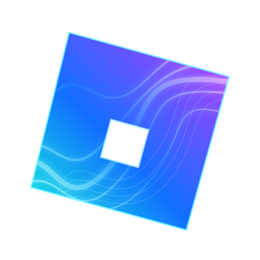

Aurora
Play Roblox on Linux. Use the stable Flathub release, or try the latest nightly build from main.
Stable on Flathub Nightly buildStable
flatpak install flathub space.bigrat.aurora
Nightly
flatpak install --user https://aurora.bigrat.space/aurora.flatpakref
x86_64 nightly Flatpak aarch64 nightly Flatpak
AUR packages
Available from the AUR. Choose one package:
yay -S aurora
yay -S aurora-bin
yay -S aurora-git
DNF repository
Stable and nightly packages for Fedora 44. Choose one package.
sudo curl -fsSL https://aurora.bigrat.space/rpm/aurora.repo -o /etc/yum.repos.d/aurora.repo
Stable
sudo dnf install aurora
Nightly
sudo dnf install aurora-nightly
APT repository
Stable and nightly packages for Ubuntu 26.04. Choose one package.
sudo install -d -m 0755 /etc/apt/keyrings
sudo curl -fsSL https://aurora.bigrat.space/aurora-packages.gpg -o /etc/apt/keyrings/aurora.gpg
echo "deb [arch=amd64 signed-by=/etc/apt/keyrings/aurora.gpg] https://aurora.bigrat.space/apt aurora main" | sudo tee /etc/apt/sources.list.d/aurora.list >/dev/null
sudo apt update
Stable
sudo apt install aurora
Nightly
sudo apt install aurora-nightly
Direct downloads
Prebuilt Linux packages. DEB and RPM are for x86_64; the nightly AppImage also has an aarch64 build.
Stable
Nightly
Aurora is an independent community project and is not affiliated with Roblox Corporation.